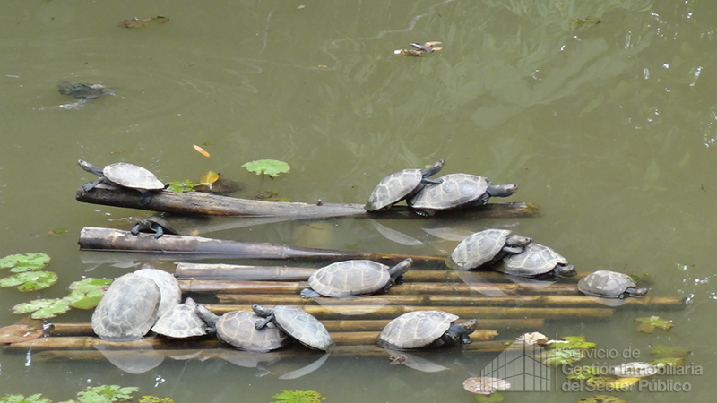
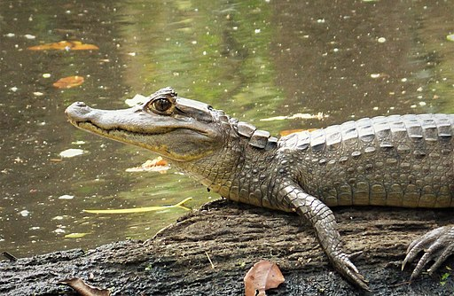

.jpg)
Cuenta con cabeza ovalada, una boca grande llena de dientes filosos, cuerpo prologando, cuatro patas cortas y delgadas y piel cubierta con laminillas a modo de escamas. Los lagartos suelen medir entre cinco y ocho centímetros de largo, son muy ágiles y, en la mayoría de los casos, se alimentan de insectos

Las tortugas charapa (Podocnemis unifilis y P. expansa) son tortugas acuáticas de agua dulce, también conocidas como tortugas de cuello lateral, debido a su incapacidad para meter completamente sus cabezas dentro de sus caparazones; en su lugar, doblan el cuello hacia los lados para meterla, dejando una parte expuesta.
.jpg)
El mono ardilla común es un primate neotropical perteneciente a la familia Cebidae. Al igual que todos los monos ardilla, posee cola larga, no prensil, con la porción terminal de color negro. En edad adulta, su cuerpo mide entre alrededor de 72±10 cm de la cabeza a la cola, y pesa entre 0.55 kg y 1.25 kg.
.jpg)
Tucán pechiblanco, tucán de pico rojo. Hábitat: Esta especie se lo puede encontrar en Sudamérica en países como: Brasil, Guayana Francesa, Guyana, Venezuela, Bolivia, Ecuador y Colombia. En Ecuador habitan en la región Amazónica, en bosques húmedos en la bajura y en las estribaciones del este.
.jpg)
El guacamayo es una de 25 especies de loros que viven en la Amazonía Ecuatoriana. Se destaca por tamaño y la belleza de su plumaje. Es un ave bastante grande de 90 cm de longitud, incluyendo la cola, tiene alrededor de 1 kg de peso.
.jpg)
El tapir amazónico (Tapirus terrestris) es de la familia Tapiridae, tiene una gran melena rígida o cresta que va desde el hombro hasta la frente. El hábitat principal de esta especie son las zonas de inundación temporal y con frecuencia visita los saladeros.
.jpg)
Eunectes murinus. Otros nombres comunes: Anaconda verde. En Ecuador se ha reportado en el bosque húmedo tropical de las provincias de Orellana, Sucumbíos, Napo, Pastaza, Morona Santiago y Zamora Chinchipe. Rango altitudinal: Habita desde el nivel del mar hasta los 1000 msnm.
.jpg)
El jaguar es un excelente nadador y se lo ha visto en ríos grandes y también en la tierra. Sus largos colmillos y garras le permiten atacar animales de gran tamaño, incluso dos o tres veces más pesados que su propio peso. El jaguar es un depredador oportunista, capaz de matar a casi cualquier presa que se encuentra.

El caimán negro (Melanosuchus niger) es un reptil carnívoro de la familia Alligatoridae, llamado así por el color oscuro de su piel cuando es adulto. Vive en lagos, ríos de movimiento lento y otros hábitats de agua dulce de América del Sur, principalmente en la cuenca del Amazonas.